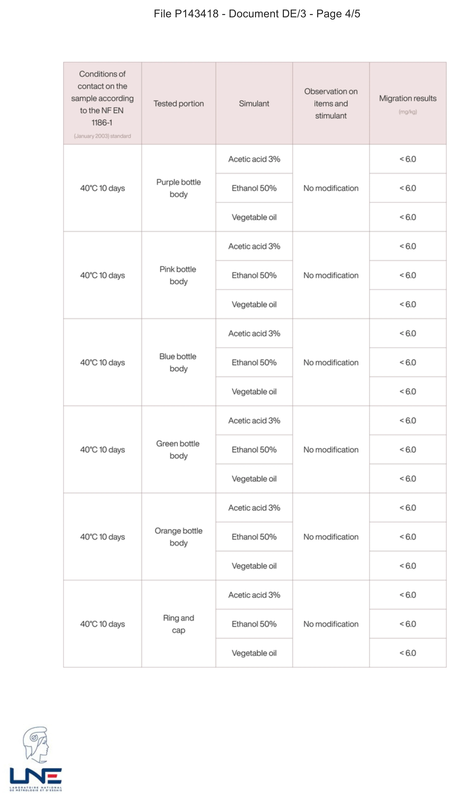

Un dispositif est évalué selon un rapport bénéfice-risque. Un implant comporte des risques, acceptés parce que le patient en retire un bénéfice thérapeutique.
Sécurité · Contact alimentaire
Matière annoncée,
migration mesurée.
Un nom de matière indique ce qu’un matériau est censé être. Un essai de migration mesure ce que l’objet fini peut céder à son contenu. Pour un biberon, la conformité de la matière et la mesure sur le produit fini sont deux preuves complémentaires.
La question d’un parent, elle, reste simple : est-ce que quelque chose passe du biberon dans le lait de mon enfant ?
01 · Deux cadres, deux logiques
Alimentaire ou médical.
Liste positive de substances autorisées, principe d’inertie, limites de migration. Rien ne passe tant que ce n’est pas démontré acceptable — et aucun bénéfice n’entre dans la balance.
Un bébé qui boit son lait ne retire aucun bénéfice thérapeutique : il n’y a rien à mettre en face du moindre risque. Transposer un vocabulaire médical sur un objet du quotidien destiné à un nourrisson est donc une erreur de raisonnement.
02 · Ce que mesure un laboratoire
La matière,
ou l’objet fini.
La plupart des fabricants s’appuient sur la déclaration de conformité de leur fournisseur de matière. Ce document est légitime et légalement requis — mais il porte sur la matière, pas sur l’objet.
Or entre la matière première et le biberon que tient le bébé, il y a un moule, une température d’injection, des colorants, un assemblage, des lavages successifs. Chacune de ces étapes peut modifier ce que le matériau relargue.
Les deux informations se complètent, et dans cet ordre : la matière détermine ce qui peut migrer — une matière végétale et un plastique ne posent pas les mêmes questions — et l’essai dit ce qui migre réellement, et en quelle quantité.
Et la matière vient d’abord. Un essai de migration se mesure toujours par rapport à un référentiel : des simulants, une durée, une température, une limite. Ce référentiel n’existe que pour les matières déclarées aptes au contact alimentaire. Sans cette déclaration, il n’y a pas d’essai à faire — non par négligence, mais parce que la question n’a pas été posée dans les termes qui permettent d’y répondre.
03 · Pourquoi tester l’objet fini
Mesuré sur
le biberon fini.
Nous avons demandé au Laboratoire national de métrologie et d’essais de mesurer la migration non pas sur la matière, mais sur le biberon terminé.
0 résidu détecté au-dessus du seuil de détection de 6 mg/kg, sur les pièces et dans les conditions couvertes par le rapport. La réglementation en autorise 60.
Dix jours à 40 °C · trois simulants · dix-huit essais
Rapport LNE n° P143418

04 · Chaque configuration testée
Les mêmes résultats.
Les cinq coloris ont été testés séparément. Pour chacun, le résultat du corps reste inférieur au seuil analytique de 6 mg/kg. La bague et le capuchon, traités sous la mention ring and cap, présentent le même résultat.
05 · Les matières de BIBEON
Le plastique laiteux,
et pourquoi nous l’avons gardé.
Le flacon est en polypropylène. Ce n’est pas le choix le plus flatteur : il est translucide, un peu laiteux, loin de l’effet verre brillant que recherchent la plupart des marques. Nous l’avons gardé pour trois raisons.
- Naturellement exempt de bisphénolsLe polypropylène n’est pas fabriqué à partir de bisphénols : il ne contient donc ni BPA constitutif, ni bisphénol employé pour le remplacer. La formulation utilisée pour BIBEON est déclarée apte au contact alimentaire, et le flacon fini a fait l’objet des essais de migration du LNE.
- Sans assouplissant ajoutéLa formulation employée pour le corps de BIBEON n’en contient pas, selon la documentation de la matière. La souplesse nécessaire aux soufflets vient du matériau lui-même et de la géométrie de la paroi — et non d’un additif.
- Il plie parce que la matière plieUn corps à soufflets se replie des centaines de fois. Le polypropylène le fait naturellement : c’est la matière des charnières souples.
Le reste, en toutes lettres
Quatre pièces.
Des preuves distinctes.
Le flacon est en polypropylène, naturellement exempt de bisphénols. Sa formulation est déclarée apte au contact alimentaire, et sa migration globale a été mesurée sur le produit fini. La tétine est en silicone alimentaire. Le biberon est conçu et fabriqué en France, en région lyonnaise, du moule au flacon.
La bague et le capuchon sont les deux pièces en contact permanent avec la tétine — celle que l’enfant met en bouche. C’est pourquoi nous les avons voulus en matière d’origine végétale, annoncée compostable par la documentation du producteur de la matière, et pourquoi ils figurent dans les essais du LNE au même titre que le flacon, sous la mention ring and cap.
06 · Pour aller plus loin
Les essais du LNE
Le protocole, le seuil analytique et le rapport tel qu’il a été rendu.
Lire →
Silicone alimentaire ou médical
Pourquoi ce n’est pas la même chose, et ce qu’exige l’arrêté du 25 novembre 1992.
Lire →
Sources · Règlement (CE) n° 1935/2004 sur les matériaux au contact des denrées alimentaires · Règlement (UE) n° 10/2011 sur les matériaux plastiques · Arrêté du 25 novembre 1992 relatif aux élastomères de silicone · Rapport d’essais LNE n° P143418 · Avis de l’Anses sur le bisphénol B, 2013.
Ce contenu présente les cadres réglementaires applicables aux matériaux. Il ne remplace ni la documentation de conformité du fabricant, ni l’avis d’une autorité compétente.
Le rapport d’essais et les fiches matière sont à votre disposition. Nous écrire →